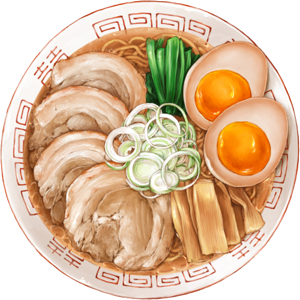

Knowledge of Ramen
Many of you tasted Ramen. Before you eat, do you know there are many types of ramen and the history? Today… let’s talk about ramen instead of eating and taste. I bet the Japanese not even know. Ramen (ラーメン, らーめん, 拉麺) is
a Japanese dish of noodles served in broth originating from China. It differs from native Japanese noodle soup dishes, in that it is served in broth based on meat such as chicken, as well as in the type of noodles and toppings
used. Ramen is served with a variety of toppings, such as sliced pork (チャーシュー chāshū), seaweed, kamaboko, green onions, and even corn. Almost every locality or prefecture in Japan has its own variation of ramen, from the
tonkotsu ramen of Kyūshū to the miso ramen of Hokkaidō.
